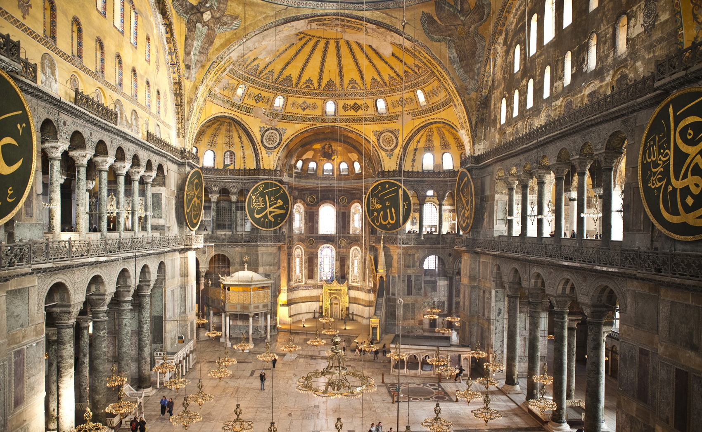
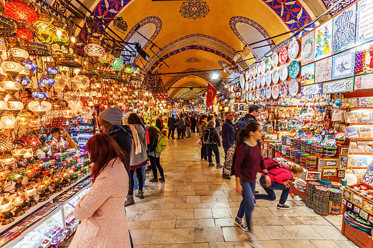
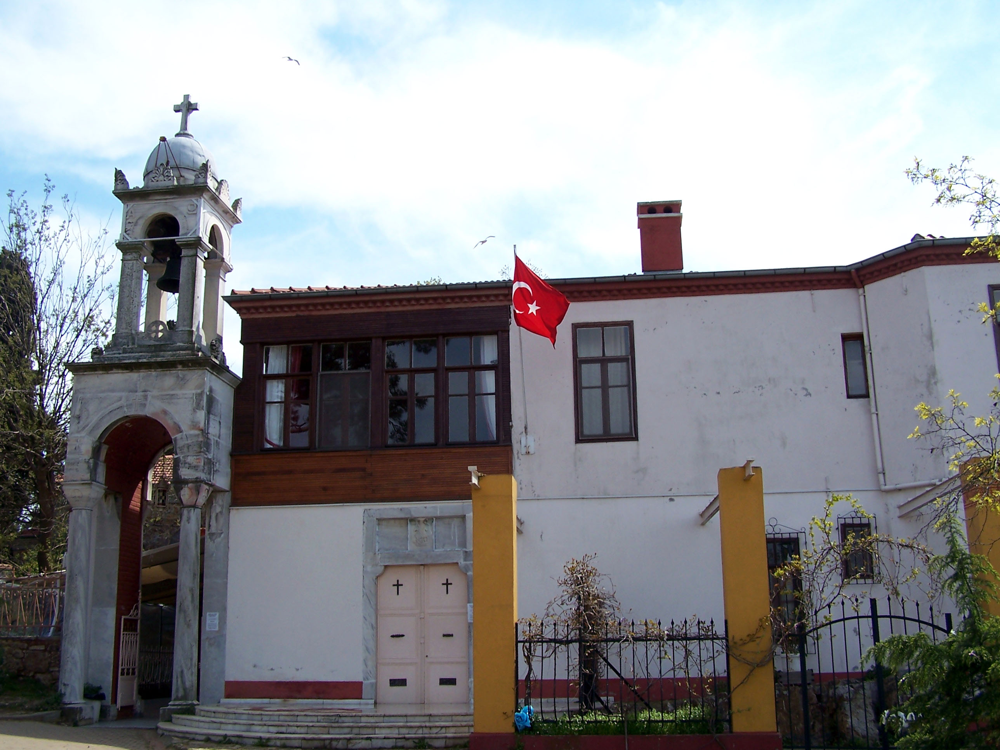
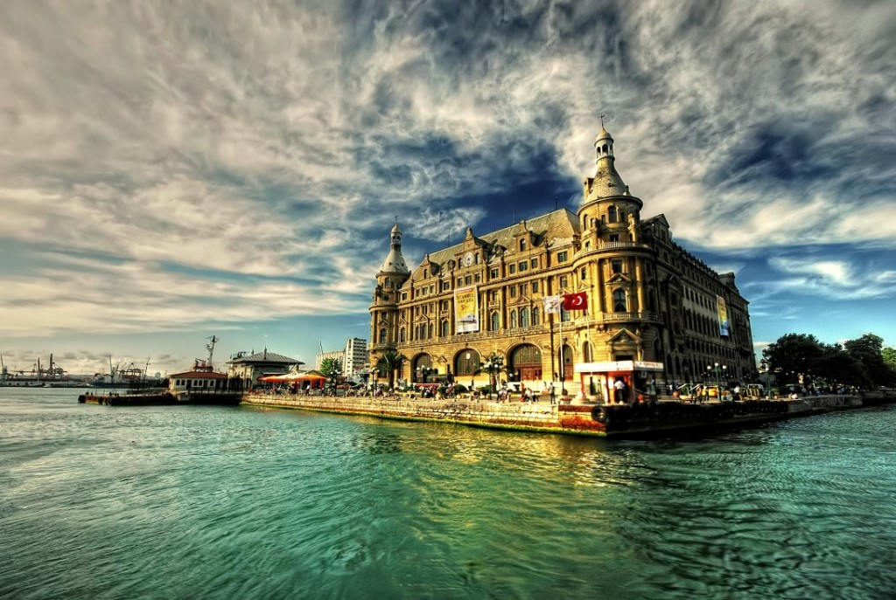
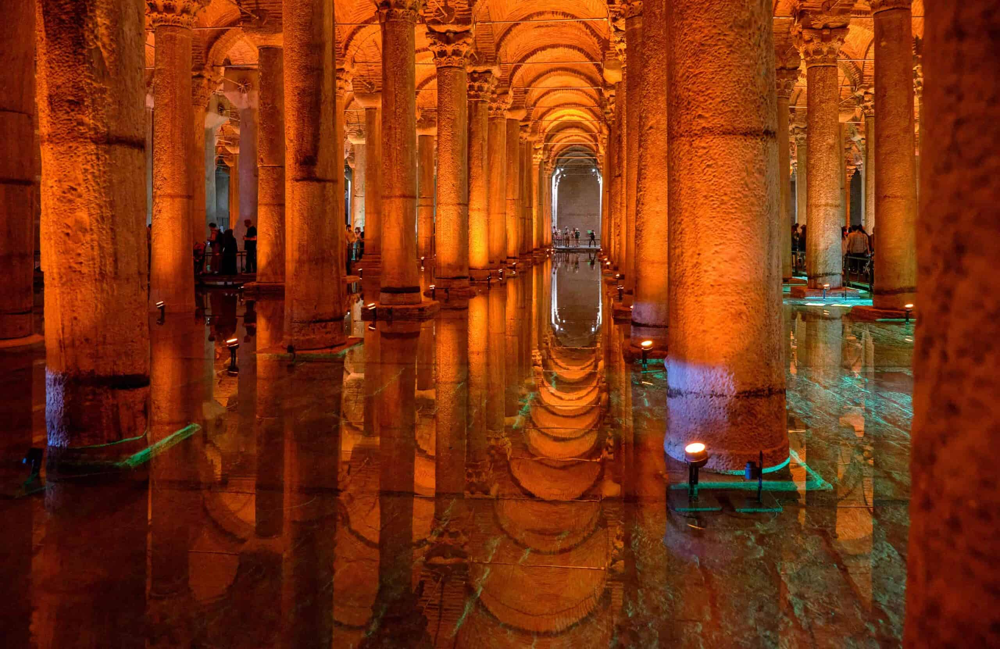

.png)
1.Ayasofya Cami
Ayasofya, İstanbul'un en önemli ve tarihi yapılarından biri olup, hem Bizans İmparatorluğu hem de Osmanlı İmparatorluğu dönemlerinde büyük bir dini ve kültürel öneme sahiptir. İşte Ayasofya'nın kısa bir tarihçesi: 1. Bizans Dönemi (537-1453): Ayasofya, Bizans İmparatoru I. Justinianus tarafından 537 yılında, dönemin en büyük kilisesi olarak inşa edilmiştir. Mimarları Anthemius ve Isidore, devasa kubbesi ile dikkat çeken bu yapıyı tasarlamışlardır. Ayasofya, Bizans İmparatorluğu'nun başkenti Konstantinopolis'te (günümüz İstanbul'u) Hristiyanlık için en önemli ibadet yeri haline gelmiştir. 2. Osmanlı Dönemi (1453-1935): 1453 yılında İstanbul'un Osmanlılar tarafından fethedilmesinin ardından, Ayasofya camiye dönüştürülmüştür. Osmanlı padişahı Fatih Sultan Mehmet, Ayasofya'nın Hristiyan ikonalarını örtüp cami olarak kullanılmaya başlanmasını sağlamıştır. Osmanlı döneminde, Ayasofya'ya çeşitli minareler ve dini süslemeler eklenmiştir. 3. Cumhuriyet Dönemi ve Müzeye Dönüşüm (1935): 1935 yılında, Türkiye Cumhuriyeti'nin kurucusu Mustafa Kemal Atatürk'ün talimatı ile Ayasofya, bir müze olarak kullanılmaya başlanmıştır. Bu süreç, Ayasofya'nın hem Hristiyanlık hem de İslam kültürünün bir birleşimi olarak koruma altına alınmasına olanak sağlamıştır. 4. Sonraki Gelişmeler: 1985 yılında, Ayasofya UNESCO Dünya Mirası Listesi'ne dahil edilmiştir. 2020 yılında ise, Türkiye Cumhuriyeti hükümeti tarafından Ayasofya yeniden cami olarak kullanılmaya başlanmıştır. Ayasofya, tarihi boyunca farklı dinler ve kültürler için önemli bir simge olmuştur. Bugün hala hem cami olarak kullanılmakta hem de turistler tarafından ziyaret edilmektedir.
2.Bozdoğan Kemeri

Bozdoğan Kemeri, İstanbul'da, Bizans İmparatorluğu dönemine ait önemli bir su kemeridir. İşte kısa bir tarihçesi: 1. Bizans Dönemi (Büyük Konstantin ve I. Justinianus Dönemi): Bozdoğan Kemeri, 4. yüzyılda, Roma İmparatoru Büyük Konstantin zamanında inşa edilmeye başlanmış ve I. Justinianus döneminde tamamlanmıştır. Bu su kemeri, Bizans İmparatorluğu'na su taşımak amacıyla yapılmış olan Valens Su Kemerleri'nin bir parçasıdır. Bu sistem, İstanbul'un su ihtiyacını karşılamak için inşa edilmiştir. 2. İnşa Amacı: Kemer, suyun dağlardan İstanbul'a taşınmasını sağlayan su yollarının bir kısmıydı. Bozdoğan Kemeri, özellikle İstanbul'un su temininde çok önemli bir rol oynamıştır. 3. Osmanlı Dönemi: Osmanlı döneminde, kemer önemli bir su taşıma yapısı olarak kullanılmaya devam etmiştir. İstanbul'un su ihtiyacını karşılamada işlevini sürdürmüştür. 4. Modern Dönem: Bugün Bozdoğan Kemeri, İstanbul'un tarihi su yapılarından biri olarak büyük bir tarihi ve kültürel öneme sahiptir. Kemeri ziyaret edenler, hem mimari güzelliklerini hem de tarihi fonksiyonunu görebilmektedirler. Bozdoğan Kemeri, İstanbul'un su taşıma sisteminin önemli bir parçası olarak, hem Bizans hem de Osmanlı dönemlerinde büyük bir işlevselliğe sahipti. Bugün hala görülebilen bu kemer, şehrin tarihi miraslarından biri olarak dikkat çekmektedir.
3.Kapalı Çarşı Kapalı Çarşı, İstanbul'un en ünlü ve tarihi çarşılarından biridir. İşte kısa bir tarihçesi: 1. Osmanlı Dönemi (1461): Kapalı Çarşı, 1461 yılında Osmanlı padişahı Fatih Sultan Mehmet'in emriyle, İstanbul'un fethedilmesinden sonra inşa edilmeye başlanmıştır. Çarşı, başlangıçta "Bedesten" adı verilen kapalı alanlarda değerli eşyaların satıldığı bir pazar olarak kullanılıyordu. Daha sonra zamanla genişleyerek, alışverişin yapıldığı büyük bir çarşıya dönüşmüştür. 2. Genişleme ve Yapılaşma: Çarşının inşası sırasında, birçok küçük dükkan ve işyeri eklenmiş, zaman içinde 60'tan fazla sokak ve 4000'den fazla dükkanla genişlemiştir. Osmanlı döneminde, Kapalı Çarşı, sadece bir ticaret merkezi olmakla kalmayıp, aynı zamanda sosyal bir buluşma noktası haline gelmiştir. 3. Modern Dönem: Günümüzde Kapalı Çarşı, hem İstanbul'un hem de Türkiye'nin en önemli turistik ve ticari alanlarından biri olmuştur. Yüzyıllardır İstanbul'da alışverişin merkezi olan bu tarihi mekan, hem geleneksel hem de modern ürünlerin satıldığı dükkanlarla turistler ve yerel halk için önemli bir alışveriş noktasıdır. Kapalı Çarşı, tarihi, mimarisi ve sunduğu ticaret deneyimi ile İstanbul'un kültürel mirasının en önemli simgelerinden biridir.
4.Kuleli askeri Lisesi
Kuleli Askeri Lisesi, İstanbul'da yer alan tarihi bir askeri okuldur. İşte kısa bir tarihçesi: 1. Kuruluş (1845): Kuleli Askeri Lisesi, Osmanlı İmparatorluğu döneminde 1845 yılında, Sultan II. Mahmud döneminde kurulmuştur. İlk olarak "Mekteb-i İdadî-i Askerî" olarak adlandırılan okul, Osmanlı ordusuna subay yetiştirmeyi amaçlayan bir okul olarak faaliyete geçmiştir. 2. Bina ve Yerleşim: Okul, İstanbul'un Üsküdar ilçesinde, Boğaziçi'nin kıyısında yer alan Kuleli Kışlası'nda eğitim vermeye başlamıştır. Burası, aynı zamanda okulun adını aldığı yerdir. Kuleli Kışlası, zaman içinde askeri okul olarak kullanılmaya devam etmiş ve okula büyük bir tarihi miras kazandırmıştır. 3. Cumhuriyet Dönemi: 1923'te Türkiye Cumhuriyeti'nin kurulmasının ardından, Kuleli Askeri Lisesi, Cumhuriyet dönemi askerî okulları arasında önemli bir yer edinmiştir. Okul, eğitimdeki modernleşme hareketleri ve disiplinli yapısıyla Türk Silahlı Kuvvetleri'ne subay yetiştirmeye devam etmiştir. 4. Kapanış (2016): 2016 yılında, Türkiye'deki askeri okulların kapatılması kararı doğrultusunda Kuleli Askeri Lisesi de kapanmıştır. Bu tarihten sonra, okul binası başka amaçlarla kullanılmak üzere devredilmiştir. Kuleli Askeri Lisesi, Osmanlı İmparatorluğu'ndan Cumhuriyet'e uzanan dönemde, Türk Silahlı Kuvvetleri'ne pek çok subay yetiştirmiş önemli bir eğitim kurumudur.
5.Aya yorgi Manastırı
Aya Yorgi Manastırı, İstanbul’un Büyükada’sında bulunan önemli bir dini yapıdır. İşte kısa bir tarihçesi: 1. Kuruluş (6. yüzyıl): Aya Yorgi Manastırı, ilk olarak 6. yüzyılda Bizans İmparatoru I. Justinianus döneminde inşa edilmiştir. Manastır, özellikle Bizans döneminde, Hristiyanlar için önemli bir ibadet merkezi olmuştur. 2. Bizans Dönemi: Manastır, özellikle Aya Yorgi'yi (St. George) kutsal kabul eden Bizanslılar tarafından büyük saygı görmüştür. Ayrıca, manastırda bir zamanlar çok sayıda keşiş yaşamış ve dini ritüeller burada yapılmıştır. 3. Osmanlı Dönemi: 1453 yılında İstanbul’un Osmanlılar tarafından fethedilmesinin ardından, Aya Yorgi Manastırı da Osmanlı dönemine girmiştir. Osmanlılar döneminde, manastır dini bir merkez olarak varlığını sürdürmüştür ve zaman zaman restore edilmiştir. Ayrıca, Adalar'daki diğer dini yapılar gibi, manastır da Hristiyanlar için önemli bir yerleşim yeri olmuştur. 4. Modern Dönem: Bugün, Aya Yorgi Manastırı, özellikle Büyükada'nın en önemli turistik ve dini noktalarından biri olup, ziyaretçilere hem dini hem de tarihi bir deneyim sunmaktadır. Manastıra her yıl, özellikle 23 Nisan'da düzenlenen Aya Yorgi festivali nedeniyle büyük bir ilgi gösterilmektedir. Aya Yorgi Manastırı, hem İstanbul'un hem de Büyükada'nın tarihi ve dini mirasının önemli bir parçasıdır.
6.Haydarpaşa Tren istasyonu
Haydarpaşa Tren İstasyonu, İstanbul’un Kadıköy ilçesinde, Marmara Denizi kıyısında yer alan önemli bir tren istasyonudur. İşte kısa bir tarihçesi: 1. Osmanlı Dönemi (1906): Haydarpaşa İstasyonu, 1906 yılında, İstanbul ile Anadolu'yu birbirine bağlayan demir yolunun inşası sırasında Osmanlı İmparatorluğu döneminde inşa edilmiştir. İstasyon, Alman İmparatorluğu'nun finansal ve teknik desteğiyle yapılan Bagdad Demiryolu projesinin bir parçası olarak, İstanbul ile Bağdat arasında bağlantı kuran önemli bir ulaşım noktasıydı. Yapının inşası sırasında Alman mimar Otto Ritter ve İstanbul’daki yerel mühendisler görev almıştır. Yapının tasarımında, Batı Avrupa’daki tren istasyonlarından ilham alınmıştır. 2. Mimari Özellikler: Haydarpaşa İstasyonu, Neo-Klasik ve Osmanlı İmparatorluğu'nun mimari tarzlarını birleştiren büyük ve ihtişamlı bir yapıdır. Hem taş hem de tuğla kullanılarak inşa edilmiştir. İstasyon binası, geniş cephesi, kuleleri ve büyük saati ile dikkat çeker. 3. Cumhuriyet Dönemi: 1923 yılında Türkiye Cumhuriyeti'nin kurulmasının ardından, Haydarpaşa İstasyonu Türkiye’nin önemli demir yolu bağlantı noktalarından biri olmaya devam etmiştir. Hem şehir içi hem de şehirlerarası ulaşımda önemli bir rol oynamıştır. 4. Modern Dönem: Haydarpaşa İstasyonu, zamanla İstanbul’un en eski ve tarihi tren istasyonlarından biri olarak simgesel bir değer kazanmıştır. 2010'larda, Haydarpaşa İstasyonu'nun çevresinde büyük bir restorasyon ve yeniden yapılandırma süreci başlamış, ancak çeşitli nedenlerle istasyonun kullanımı bir süre duraklatılmıştır. Haydarpaşa İstasyonu, İstanbul'un tarihi ulaşım noktalarından biri olarak hem mimarisi hem de tarihî önemiyle önemli bir simge olmaya devam etmektedir.
